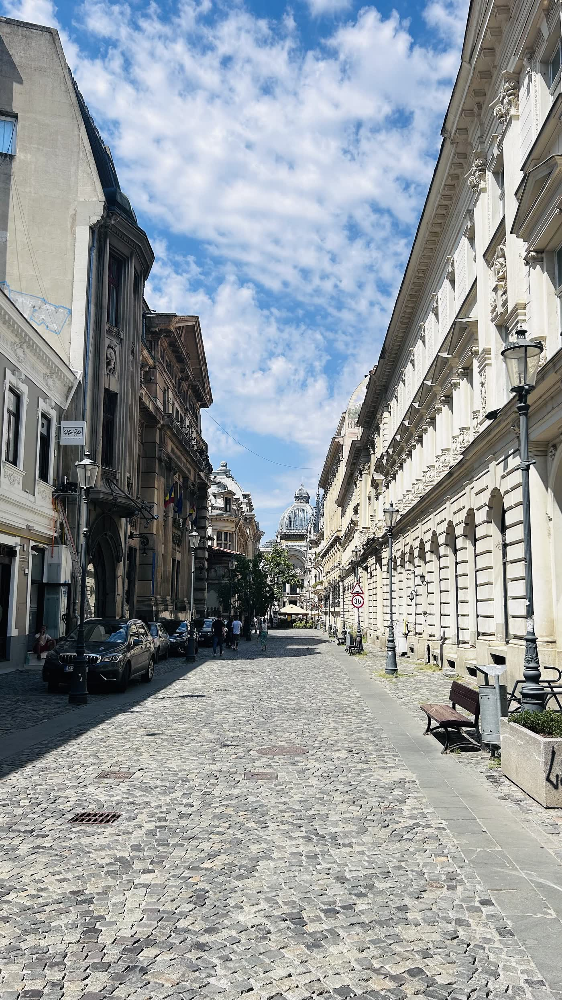
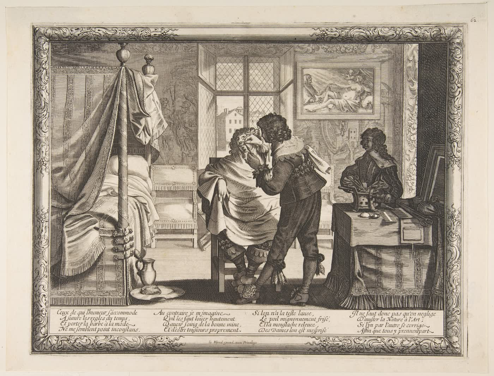
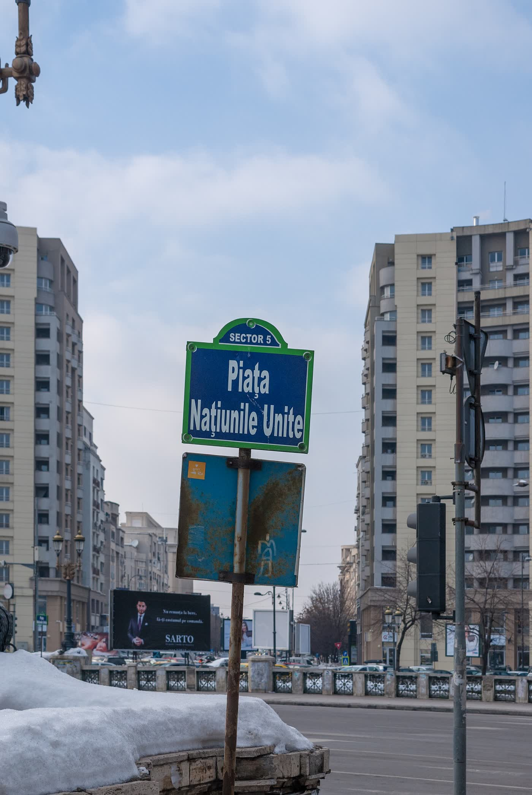

Barber
ka
Frizerie și un loc de socializare, pe Strada George Vâlsan 31, Sector 6, București.
Frizerie
Salon de tuns, pentru bărbați și nu numai. Tipurile de tunsoare nu sunt publicate.
Pentru doamne
Machiaj și tratamente faciale, cu Andreea Stoica.
Fără prețuri publice
Sunați pentru timp și preț. O listare publică arată 4,9 din 394 de recenzii Google.



Program
Luni–vineri 10:00–21:00
Sâmbătă 09:00–18:00
Duminică închis
0771 220 583 barberokabarbershop@gmail.com Strada George Vâlsan 31 Facebook